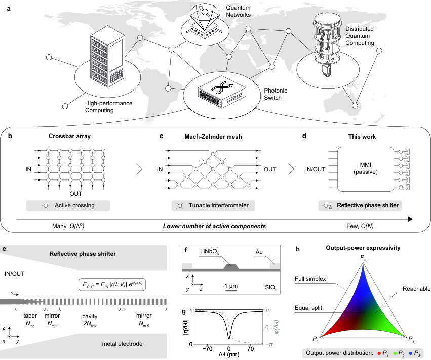
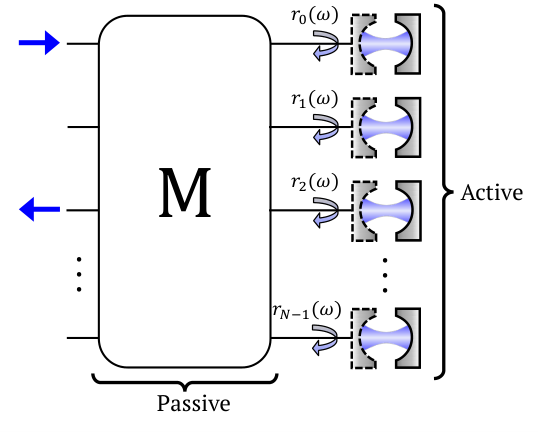
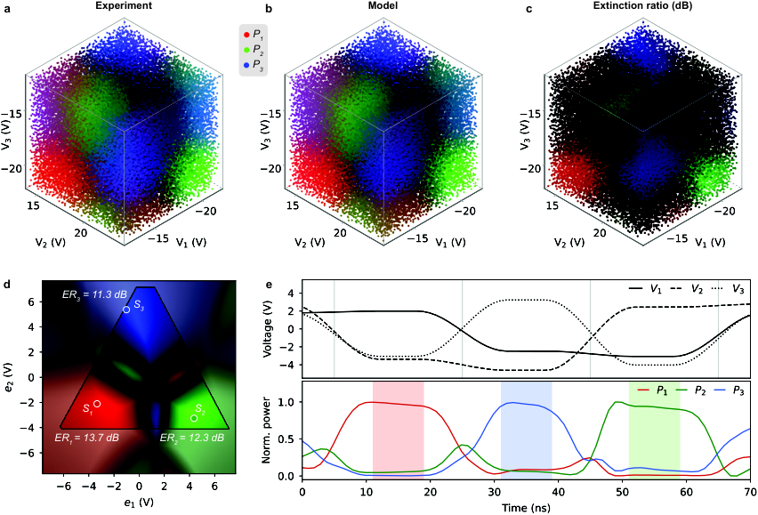
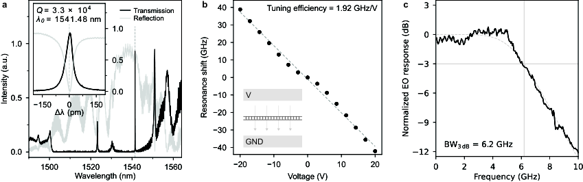

The pairwise routing theorems, the three-port reachable-region equivalence theorem, and supporting algebraic identities are machine-checked in Lean 4 with Mathlib, with source on GitHub.
Abstract
Programmable photonic meshes can perform general linear transformations, but universal transformations on $N$ modes require $O(N^2)$ programmable phase shifters, which cannot simultaneously achieve low drive voltage, gigahertz speed, zero static power, lossless modulation, and a compact footprint. Signal routing does not require universal transformations, which allows considerable circuit simplifications. We present a compact reflective circuit architecture that connects all input-output pairs across $N$ modes in $N$ steps using only $O(N)$ programmable phase shifters. The circuit comprises a single passive $N\times N$ interferometer and a single column of programmable reflective phase shifters. We demonstrate the architecture by implementing a $3\times 3$ router in x-cut thin-film lithium niobate with a passive multimode interferometer and phase shifters based on single-sided photonic-crystal nanobeam cavities. Our programmable devices exhibit a $1.92$ GHz/V resonance tuning efficiency via the Pockels effect, a footprint of $100\,μ\mathrm{m}^2$, sub-5-V drive voltage, and a 6.2 GHz electro-optic bandwidth. Through voltage-space characterization and physical modeling, we identify routing states with extinction ratios exceeding 11 dB at each output and demonstrate sequential routing at an equipment-limited speed of 10 MHz. Our results establish cavity-enhanced Pockels switching as a routing layer for classical and quantum computing interconnects across visible and near-infrared wavelengths.
Problem
Universal programmable photonic meshes on N modes need O(N^2) phase shifters. With that many devices, they cannot also offer low drive voltage, GHz speed, zero static power, low loss, and a compact footprint. Signal routing does not require universal transformations, so simpler circuits may be enough.
Approach
The proposed reflective architecture uses one passive N×N interferometer (an equal-split MMI) and a single column of N programmable reflective phase shifters. A DFT-based proof shows that all input-output pairs can be connected in N steps. A 3×3 router was built in x-cut thin-film lithium niobate, using single-sided photonic-crystal nanobeam cavities as Pockels-tuned phase shifters. The routing theorems and the reachable-region equivalence theorem were formalized and machine-checked in Lean 4 against Mathlib.

Figure 1: Multiport photonic routing architecture and electro-optic cavity phase-shifter principle. a , Network-level role of photonic switches in connecting high-performance computing systems, quantum networks, and distributed quantum processors. b , Crossbar switch with an active element at each input–output crossing, requiring O(N^{2}) active elements. c , Universal Mach–Zehnder-interferometer

Supplementary Figure S1: Sketch of an N -port pairwise router with a passive MMI described by a transfer matrix \mathbf{M} and N single-sided cavity phase shifters with complex field-reflection coefficients r_{j}(\omega) . Only N-1 relative reflector phases are independent because a common phase does not affect the output powers.
Results
The cavities show 1.92 GHz/V tuning efficiency, a 100 μm² footprint, sub-5-V drive voltage, and 6.2 GHz electro-optic bandwidth. Routing states reach extinction ratios above 11 dB at each output. Sequential routing was demonstrated at an equipment-limited 10 MHz.

Figure 4: Voltage-space characterization and model-guided time-domain routing. a , Measured output-power distributions across the (V_{1},V_{2},V_{3}) voltage cube sampled by the multisine drive. The RGB value of each point encodes the relative output powers, with red, green, and blue components corresponding to P_{1} , P_{2} , and P_{3} , respectively. b , Output-power distributions predicted by t

Figure 3: Cavity spectroscopy, electro-optic tuning and modulation bandwidth. a , Measured broadband transmission (black) and reflection (gray) spectra of a representative two-sided reference cavity, independently scaled for display; inset: the measured cavity resonance versus wavelength detuning. b , Measured resonance-frequency shift of a single-sided device cavity versus applied DC voltage at a